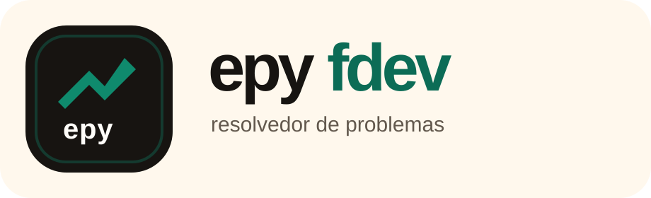

Logo horizontal

Uso principal em website, apresentações, documentos e capas.
Brand kit base
Esta página reúne os primeiros activos e princípios da marca para manter consistência entre site, social, apresentações e futuras interfaces.
Logos
Logo horizontal

Uso principal em website, apresentações, documentos e capas.
Símbolo
Uso reduzido em avatar, favicon, destaque e assinatura visual.
Wordmark
Uso quando a marca precisa de maior clareza nominal sem o símbolo.
Cores
Princípios
Clareza
O visual deve simplificar, orientar e reduzir atrito.
Execução
A marca deve passar ação concreta, não só intenção.
Presença
O sistema visual precisa soar premium sem parecer distante.